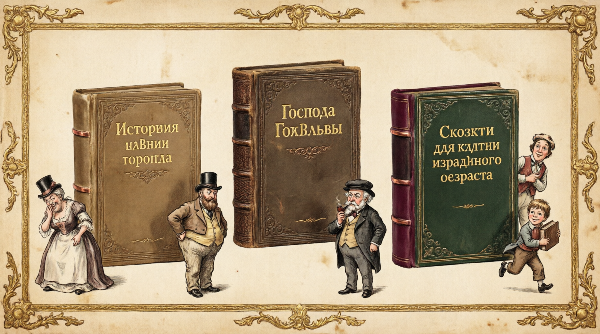
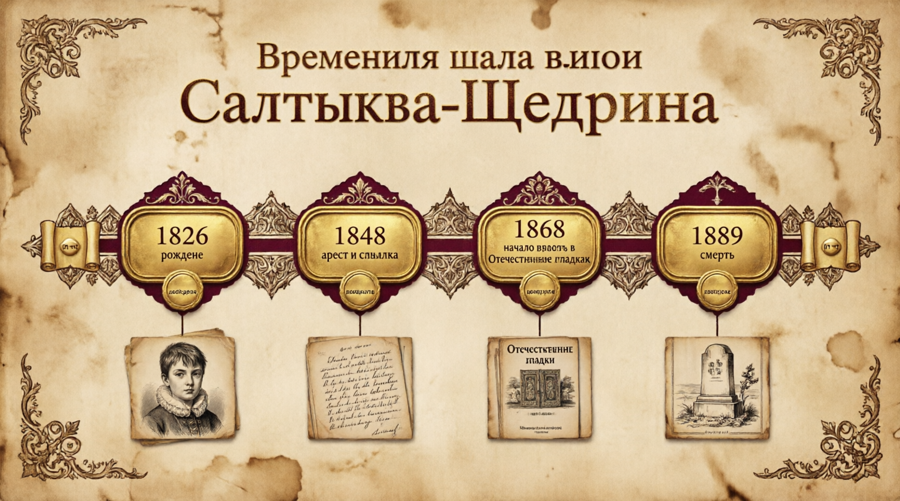

Галерея иллюстраций



Виртуальная выставка к юбилею великого сатирика
Михаил Евграфович Салтыков родился в селе Спас-Угол Тверской губернии в дворянской семье.
За публикацию повести «Запутанное дело» арестован и отправлен в ссылку в Вятку.
Возглавил журнал «Отечественные записки», где публиковал свои главные сатирические произведения.
Скончался в Петербурге. Похоронен на Волковом кладбище рядом с Тургеневым.
1869–1870
Сатирический роман о вымышленном городе Глупове и его правителях. Через гротеск и абсурд Щедрин показывает пороки российской государственности и общества.
1875–1880
Семейная хроника о вырождении дворянского рода. Центральная фигура — Иудушка Головлёв, ставший символом лицемерия и нравственной пустоты.
1882–1886
Цикл сатирических сказок, где под видом детских историй Щедрин критикует социальные пороки: страх жизни, бюрократию, лицемерие.
«Премудрый пискарь» — о страхе жить

